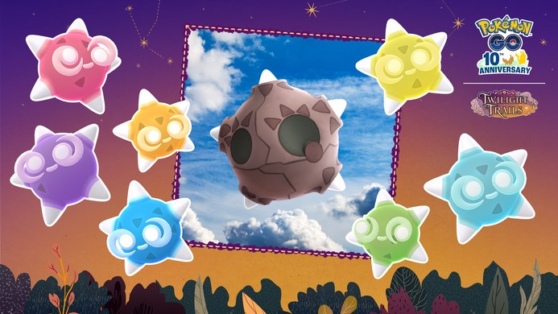

포켓몬 GO 메테노 샤워 시간 매일 17시부터 21시, 10월 24일까지 야생 메테노와 별의모래 챙기기
퇴근하고 한숨 돌리는 저녁에 하늘에서 별똥별이 떨어진다면 포켓몬 GO부터 켜 보고 싶어지지 않나요? 그런 시간이 이번 주에 매일 열리는데요, 오리온자리 유성우 기간 동안 매일 한국 시간 17시부터 21시 사이에 '메테노 샤워'가 열려요. 기간은 10월 24일 토요일 23시 59분까지라서, 10월 21일 오늘을 포함해 4일(21·22·23·24일)이 남았어요. 오늘 샤워는 21시까지예요.
포켓몬 GO 메테노는 이번에 GO에 처음 들어온 유성 포켓몬이라 놓치면 아쉬운 친구인데요, 그래서 오늘은 몇 시에 야생을 돌리면 되는지, 별의모래는 공지에 어디까지 적혀 있는지, 메테노가 형태를 어떻게 바꾸는지, 다음 유성우는 언제 오는지를 차례대로 풀어 볼게요 ㅎㅎ
메테노 샤워는 몇 시에 열리고 언제까지인가요?
포켓몬 GO 메테노 샤워는 오리온자리 유성우 기간인 10월 19일 월요일 17시부터 10월 24일 토요일 23시 59분까지, 매일 한국 시간 17시부터 21시 사이에 열리고 그 시간엔 하늘에 별똥별이 떨어지면서 야생 메테노를 만날 확률이 올라가요.

가운데가 유성의 모습이고 둘레가 색 코어 모습이에요.
출처: 포켓몬 GO 공식 공지 · 네이버 본문엔 받아서 재업로드 권장
| 항목 | 내용 |
|---|---|
| 유성우 기간 | 10월 19일(월) 17:00 ~ 10월 24일(토) 23:59 (한국 시간) |
| 메테노 샤워 | 기간 중 매일 17:00 ~ 21:00 |
| 샤워 시간의 변화 | 하늘에 별똥별, 야생 메테노 조우 확률 증가 |
| 만나는 곳 | 야생 |
| 10월 21일(수) 오늘부터 남은 샤워 | 오늘 포함 4일 (21일·22일·23일·24일) |
샤워 시간은 하루에 딱 네 시간이고 기간 내내 같은 시각에 반복돼요. 한국어 공지에는 별똥별이 게임 속 하늘을 수놓는다고 나와 있고, 영문 공지에는 그 시간에 메테노를 만날 확률이 올라간다고 적혀 있어요. 메테노는 야생에서 유성의 모습으로 만날 수 있어요.
메테노 샤워, 이럴 땐 이렇게
· 17시~21시에 접속할 수 있는 날: 그 시간에 야생을 돌려요. 공지가 별똥별과 조우 확률 증가를 적어 둔 시간이라서요.
· 그 시간에 못 나오는 날: 24일 21시 전까지 남은 날 중 시간이 되는 날로 옮겨요. 샤워가 매일 같은 시각에 다시 열리니까 하루 놓쳐도 다음 날 같은 시각이 있거든요.
별똥별이 보이면 샤워 시간이 시작된 거예요.
저는 샤워 시간에 〔퇴근길에 / 저녁 먹고 집 앞에서 / 주말 낮에 틈틈이〕 야생을 돌려 보려고 해요.
별의모래 증가는 어디까지 확인됐나요?
공지에서 확인되는 건 '메테노를 잡았을 때 받을 수 있는 별의모래가 증가한다'는 한 문장이 전부예요. 증가 폭과 적용 시간대는 아래 표처럼 비어 있어요.
이 문장은 샤워 시간 문단이 아니라 '새로운 포켓몬 등장' 항목에 따로 붙어 있어서, 확률 증가와 별의모래 증가는 따로 읽는 게 정확해요.
| 항목 | 공지 내용 |
|---|---|
| 메테노를 잡았을 때 받는 별의모래 | 증가한다고 적혀 있어요 |
| 증가 폭(수치) | 공지에 따로 안 나와 있어요 |
| 적용 시간대 | 공지에 따로 안 나와 있어요 |
수치가 없으니 '몇 배'처럼 숫자로 말하는 글은 공지 밖 이야기라고 보시면 돼요. 별의모래가 목적이라면 샤워 시간에 야생을 돌리면서 메테노를 하나라도 더 잡는 쪽이 제일 무난한데요, 공지가 별의모래 증가 구간을 시간으로 못 박지 않았으니 17시~21시 바깥에서 잡은 메테노가 덜 준다고 단정할 근거도 없어요.
확인 위치: 인게임 포획 결과 화면 · 확인되면 아래에 채워주세요.
| 항목 | 값(확인 후 입력) |
|---|---|
| 메테노 포획 때 실제 받은 별의모래 수치 | — |
| 이번 오리온자리에서 처음 나오는 코어 색 | — |
메테노는 형태가 어떻게 바뀌나요?
메테노는 체력이 높을 때는 유성의 모습이고 체력이 50퍼센트 이하로 떨어지면 겉껍질이 벗겨진 모습으로 바뀌는데, 유성의 모습은 방어가 높고 공격이 낮고 겉껍질이 벗겨진 모습은 공격이 높고 방어가 낮아요.
| 형태 | 바뀌는 조건 | 특징 |
|---|---|---|
| 유성의 모습 | 체력이 높을 때 | 방어 높음, 공격 낮음 |
| 겉껍질이 벗겨진 모습 | 체력 50% 이하 | 공격 높음, 방어 낮음 |
다만 처음에는 형태 변화가 GO로켓단 배틀, 팀 리더 배틀, GO배틀리그에서만 일어난다고 공지에 적혀 있어요. 야생에서는 유성의 모습으로 만나는데요, 형태가 바뀌는 건 이 세 가지 배틀 안의 이야기예요. 체력이 깎일수록 공격은 세지고 방어는 약해지는 셈이라, 배틀에서 쓰실 분은 이 흐름을 미리 알아 두면 좋겠죠.
코어 색은 몇 가지고 어떤 규칙으로 나오나요?
메테노의 코어 색은 빨간색·주황색·노란색·초록색·옥색·파란색·보라색 코어 일곱 가지이고, 유성우마다 서로 다른 코어 색이 처음 등장하는 방식이에요.
- 빨간색 코어
- 주황색 코어
- 노란색 코어
- 초록색 코어
- 옥색 코어
- 파란색 코어
- 보라색 코어
정보 화면에서 코어 색을 먼저 보게 돼요.
쌍둥이자리 유성우만 북반구와 남반구에서 각각 다른 색이 하나씩 처음 나와요. 이번 오리온자리의 첫 코어 색은 확인되지 않았어요. 위 목록은 한국어 공지가 적어 둔 순서와 표기 그대로예요.
다음 유성우는 언제 오나요?
공지 일정표에는 유성우가 여섯 번 올라와 있고, 오리온자리 다음은 사자자리 유성우로 11월 14일부터 19일까지 열려요.
| 유성우 | 기간 (한국 시간 17:00 ~ 23:59) | 지금 상태 |
|---|---|---|
| 물병자리 에타 | 5월 3일 ~ 5월 8일 | 지났어요 |
| 물병자리 남쪽 델타 | 7월 28일 ~ 8월 2일 | 지났어요 |
| 페르세우스자리 | 8월 10일 ~ 8월 15일 | 지났어요 |
| 오리온자리 | 10월 19일 ~ 10월 24일 | 진행 중 |
| 사자자리 | 11월 14일 ~ 11월 19일 | 예정 |
| 쌍둥이자리 | 12월 11일 ~ 12월 16일 | 예정 |
표의 시각은 유성우 기간 기준이고 값은 공지 일정표 기준이에요. 이 유성우는 매년 이어진다고 적혀 있는데요, 유성우마다 처음 나오는 코어 색이 달라서 색을 모으는 분이라면 이 일정표에 맞춰 움직이는 편이 좋겠죠.
자주 묻는 질문
Q. 색이 다른 이로치 메테노도 나오나요?
공지에 이로치 메테노 언급은 없어서 나온다고도 안 나온다고도 말할 수 없어요.
Q. 메테노 샤워는 마지막 날 몇 시까지 하나요?
마지막 날인 10월 24일도 샤워는 17시부터 21시까지예요. 23시 59분은 유성우 기간이 끝나는 시각이라 샤워 시간과는 따로 봐야 해요.
Q. 이번에 놓치면 다시 기회가 있나요?
네, 사자자리(11월 14일)와 쌍둥이자리까지 일정표에 있어요.
메테노 샤워 정리
10월 24일 23시 59분까지 남은 샤워는 오늘 포함 4일(21·22·23·24일)이라, 저라면 17시~21시 사이에 야생 돌릴 시간부터 먼저 잡아 두겠어요. 별의모래는 덤으로 보고 메테노부터 잡는 쪽이 마음 편할 것 같아요. 별똥별 구경하면서 메테노 많이 잡으시길 바랄게요~
✔ 포켓몬 GO 같이 보기 좋은 내용
· 포켓몬 GO 메가깜까미 슈퍼 맥스 레벨, 11월 1일 오전 10시부터 올릴 수 있어요
· 포켓몬GO FC서울 이벤트 정리 10월 24일 토요일 9시~20시, 야생 6종 파이리 레이드 시간제한 리서치 보상
· 포켓몬고 핼러윈 2026 파트1 해트와 케이프 피카츄 만나는 법, 10월 27일 별1 레이드와 GO패스 보너스
참고한 곳 (2026.10.21 기준)
· 포켓몬 GO 공식 공지 — 메테노 샤워
· Pokémon GO 공식 공지(영문)